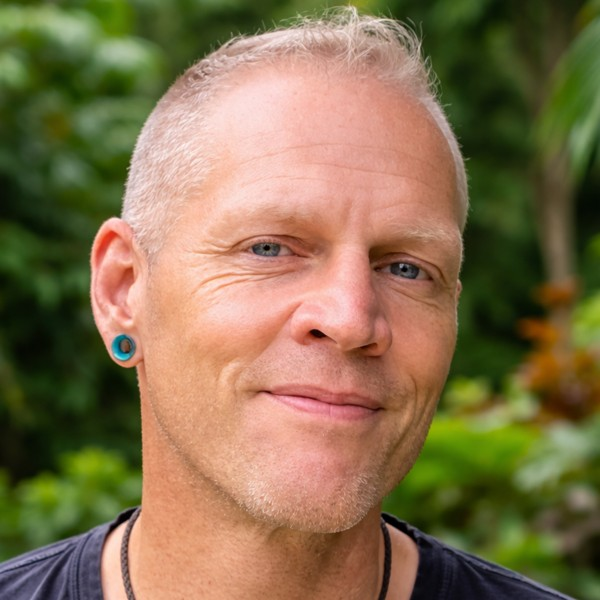

Pages
index.html
Main
about.html
About
privacy.html
Legal
Images


hero-seven-fires.png
Hero background
cracked-earth-dusk.png
Problem section
divider-light-band.png
Section divider

rick-portrait-600.jpg
Author portrait
book-mockup-dark.png
Book mockup
Quick Links
Substack
GitHub Pages
Code HTML
Preview
Log
INFO
Editor loaded. All three pages and assets are ready.
Session start
 \n
\n \n
\n \n
\n  \n
\n